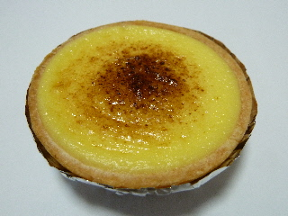
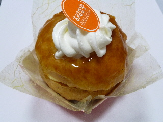
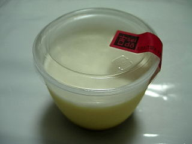
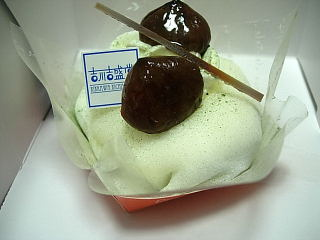
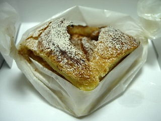
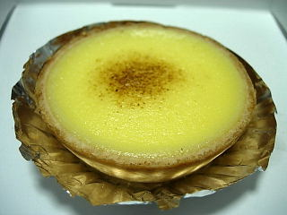

吉盛堂のたまごタルトが変わっていました。
2012/05/18
前にも食べていましたね。
前はスポンジがあったみたいですが、今回はクリームたっぷりでした。

やさしい味なので、ガブっと食べたほうが美味しいかも？って思いました。
ちょっとミルキーな感じがしました。

これはお酒風味のケーキでした。
パイナプルも入っていました。
島根県飯石郡飯南町赤名26
2012/05/18
前にも食べていましたね。
前はスポンジがあったみたいですが、今回はクリームたっぷりでした。

やさしい味なので、ガブっと食べたほうが美味しいかも？って思いました。
ちょっとミルキーな感じがしました。

これはお酒風味のケーキでした。
パイナプルも入っていました。
2009/09/26
ミルクの乗ったプリンです。

柔らかくて、とろっとしたプリンですね。甘さがしっかりとありました。
桑抹茶ロールのカットデコレーションものです。

山陰中央新報の「りびえ～る」に、ほろ苦いって書いてありましたが、そんな感じで、クロレラのような、青菜のような少し苦い味がしました。
色んなタイプの商品があるお店ですね。
2009/09/26
包装の仕方がちょっとお洒落なアップルパイですね。

立体的なパイですが、中には林檎だけじゃなく、スポンジも入ってました。スポンジが入ってるぶん林檎味が少ないですが、甘くてマイルドな味になってました。
こっちはたまごのタルトです。

こっちもカスタードクリームだけじゃなくスポンジが入ってました。
たるとがサクサクとしたシンプルなものだったので、軽くて優しい味でした。